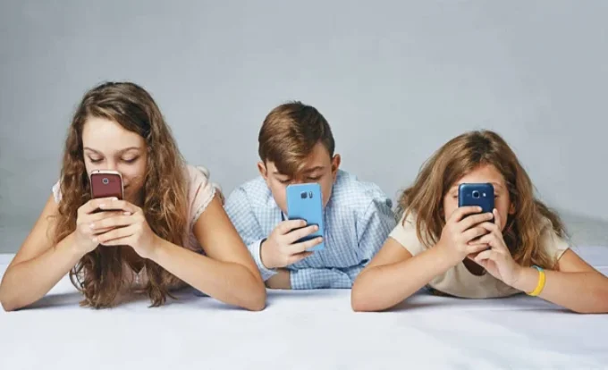

Redes sociales: hábitos y riesgos para niños y adolescentes
Aunque muchos de nosotros disfrutamos mantenernos conectados en las redes sociales, el uso excesivo puede generar sentimientos de adicción, ansiedad, depresión y aislamiento entre otras consecuencias. El presente artículo analiza las consecuencias del uso excesivo de redes sociales en la salud mental, las relaciones interpersonales y el desarrollo cognitivo de niños y adolescentes en Córdoba, Argentina, entre los años 2020 y 2024.
Por Agostina Chávez y Mateo Fernández
Introducción
Los seres humanos necesitamos relacionarnos con los demás para sentirnos bien y desarrollarnos plenamente. Las amistades, el apoyo y el contacto social son fundamentales para nuestra salud emocional, ya que ayudan a reducir la ansiedad, mejorar la autoestima y evitar la soledad. En la actualidad, gran parte de esos vínculos se dan a través de las redes sociales como Instagram, TikTok, YouTube o Snapchat, que se han convertido en espacios habituales de encuentro para niños y jóvenes. Sin embargo, aunque estas plataformas ofrecen oportunidades para comunicarse y compartir, también pueden generar riesgos cuando se utilizan en exceso. Pasar demasiado tiempo frente a la pantalla puede producir aislamiento, tristeza o frustración ya que se reemplazar la interacción cara a cara que resulta esencial para el bienestar. Por eso, es importante reflexionar sobre cómo usamos las redes sociales y encontrar un equilibrio que permita aprovechar sus beneficios sin descuidar la conexión humana real.
El uso de las redes por niños y jóvenes
En la actualidad, la mayoría de los niños y adolescentes acceden a las redes sociales a través de teléfonos inteligentes o tabletas. Esta facilidad de conexión les permite mantenerse en contacto de manera constante. Esta hiperconectividad genera dificultades en el control de los impulsos: las notificaciones y alertas interrumpen la concentración, afectan el sueño y llevan a una dependencia del dispositivo. Según numerosos especialistas, “el uso de las redes sociales —aplicaciones de mensajería instantánea incluidas— puede generar adicción con sus consiguientes consecuencias: ansiedad, depresión, irritabilidad, aislamiento, alejamiento de la vida real y de las relaciones familiares, pérdida de control, etc”1.
Actualmente, se dispone de una gran cantidad de datos, procedentes de diversos estudios científicos, que permiten ver el alcance que tiene utilizar tecnología digital y redes sociales en exceso.
Las plataformas de redes sociales están diseñadas para captar la atención, mantener en línea y hacer que se revise la pantalla repetidamente en busca de actualizaciones. Diversas investigaciones han evidenciado un vínculo directo entre el consumo excesivo de las redes sociales y problemáticas como ansiedad, baja autoestima, adicción tecnológica y dificultades para socializar. En este sentido, los especialistas recomiendan un uso más consciente de las redes, acompañado de medidas de prevención y regulación.
Las redes sociales se han convertido en un fenómeno central en la vida de niños y adolescentes, especialmente luego de la pandemia por COVID-19. Plataformas digitales como TikTok, Instagram y YouTube ocupan una parte significativa del tiempo de los jóvenes, configurando nuevas formas de comunicación, identidad y relaciones sociales. Sin embargo, diversos estudios alertan sobre los efectos perjudiciales que traen aparejadas estas conductas.
El incremento en el tiempo de exposición a redes sociales ha generado inquietudes sobre cómo afectan el desarrollo emocional y cognitivo de los niños y adolescentes. Se parte de la hipótesis de que un uso superior a 4 horas diarias está relacionado con síntomas de estrés, baja autoestima, alteraciones del sueño, presión por la imagen corporal y dificultades en las relaciones familiares y escolares. A su vez, se busca conocer qué contenido consumen, cómo lo perciben, y qué políticas de protección existen para ellos.

La psiquiatra Marian Rojas Estapé señala la relación entre la dopamina liberada por los “likes” y el desarrollo de adicción, así como el desplazamiento de las relaciones familiares por vínculos virtuales. Cada vez que una persona recibe un “me gusta”, un comentario o una reacción positiva, el cerebro libera dopamina, la misma sustancia asociada al placer inmediato, como al comer chocolate. Estas pequeñas recompensas generan un círculo de repetición que, a largo plazo, puede resultar perjudicial para la vida cotidiana.
“Hace unos años el cofundador de Facebook reconoció en un evento médico en Filadelfia lo siguiente "creamos Facebook para generar adictos, nos dimos cuenta de la vulnerabilidad del ser humano" e insiste en que los adultos seamos los maestros de los jóvenes para mostrarles los efectos que genera el uso constante de pantallas y redes sociales”.
Un estudio de la UNAM2 advierte sobre la precocidad con la que los menores acceden a plataformas digitales, muchas veces sin supervisión, exponiéndose a desafíos virales peligrosos y algoritmos que refuerzan estereotipos e inseguridades.“Es frecuente que niños a partir de los 8 años se adentren en este mundo, no necesariamente mediante un perfil en Facebook o Instagram, sino a través de videojuegos que permiten la comunicación en línea, como Minecraft o Among Us. Es fundamental prestar atención a dos aspectos: las características de la red social a la que los niños pueden acceder y la supervisión parental”3. Además, abordaron conceptos clave como salud mental, adicción, influencia, percepción, imaginación y anormalización del sueño, los cuales permiten describir los fenómenos observados.
Conclusión
El uso de redes sociales se volvió parte del día a día de niños y adolescentes, especialmente después de la pandemia. Si bien estas plataformas pueden ser útiles para comunicarse y expresarse, también pueden causar efectos negativos en la salud mental, como ansiedad, problemas de autoestima, insomnio y dificultades para relacionarse.
“Psicólogos, psiquiatras y expertos de Silicon Valley alertan de que el uso de las redes sociales puede ser adictivo y sus consecuencias, las mismas que las de cualquier otra adicción: ansiedad, dependencia, irritabilidad, falta de autocontrol”4. Los resultados de esta investigación muestran que muchos jóvenes usan las redes durante varias horas al día, sin control ni acompañamiento adulto. Esto puede generar una fuerte dependencia y afectar su bienestar emocional.
El aumento del uso problemático de las redes sociales entre los adolescentes genera gran preocupación sobre su posible impacto en los jóvenes. Investigaciones previas han revelado que entre los usuarios de las redes sociales se han detectado consecuencias de gran alcance. Además, el uso problemático de las redes sociales se ha asociado con menos horas de sueño, lo que podría afectar la salud general y el rendimiento académico.
Citas
- Extraído de “Cómo combatir la adicción a las redes sociales. Adicción a las redes sociales: causas y síntomas principales”. En: https://www.iberdrola.com/compromiso-social/como-afectan-redes-sociales-jovenes
- Consultado en “Redes sociales y menores de edad”. En: https://unamglobal.unam.mx/global_revista/redes-sociales-y-menores-de-edad/
- La seguridad de la infancia y la juventud en la red. En: https://www.un.org/es/global-issues/child-and-youth-safety-online
- Extraído de “Cómo combatir la adicción a las redes sociales. Adicción a las redes sociales: causas y síntomas principales”. En: https://www.iberdrola.com/compromiso-social/como-afectan-redes-sociales-jovenes
Bibliografía
- “Adolescentes, pantallas y salud mental”. En: https://www.who.int/europe/news/item/25-09-2024-teens--screens-and-mental-health
- “Cómo combatir la adicción a las redes sociales. Adicción a las redes sociales: causas y síntomas principales”. En: https://www.iberdrola.com/compromiso-social/como-afectan-redes-sociales-jovenes
- “El daño que le causa la tecnología y las redes sociales al cerebro de niños y adolescentes”. En: https://www.lanacion.com.ar/tecnologia/
- “La seguridad de la infancia y la juventud en la red”. En: https://www.un.org/es/global-issues/child-and-youth-safety-online
- “Redes sociales y menores de edad” En: https://unamglobal.unam.mx/global_revista/redes-sociales-y-menores-de-edad/
- “Riesgos y ventajas del uso de internet en la adolescencia sociales: causas y síntomas principales”. En: https://blog.up.edu.mx/prepaup/femenil/riesgos-y-ventajas-del-uso-de-internet-en-la-adolescencia
Imagen de portada | Más de la mitad de adolescentes tienen dificultad para identificar una noticia falsa